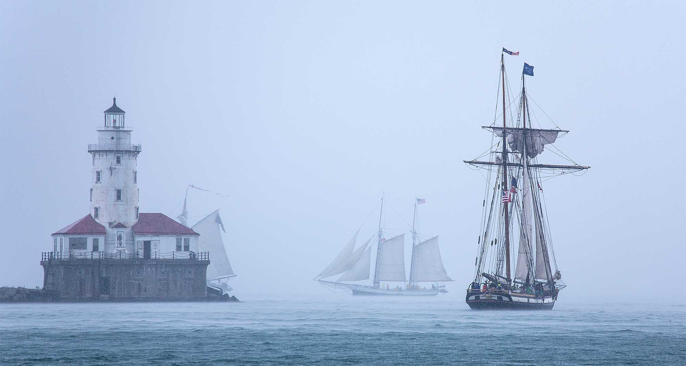
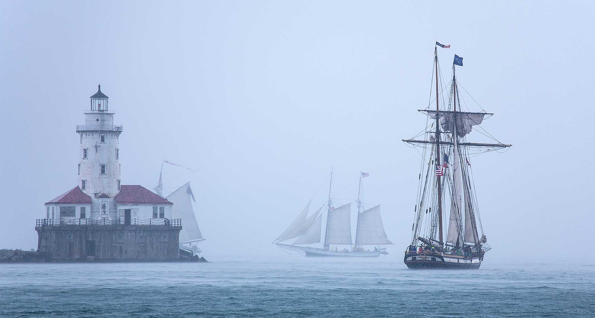
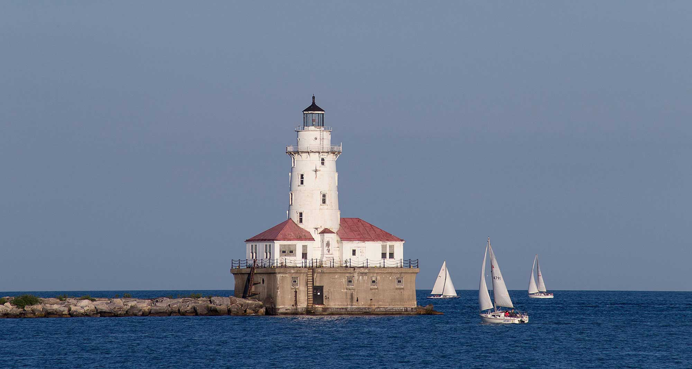
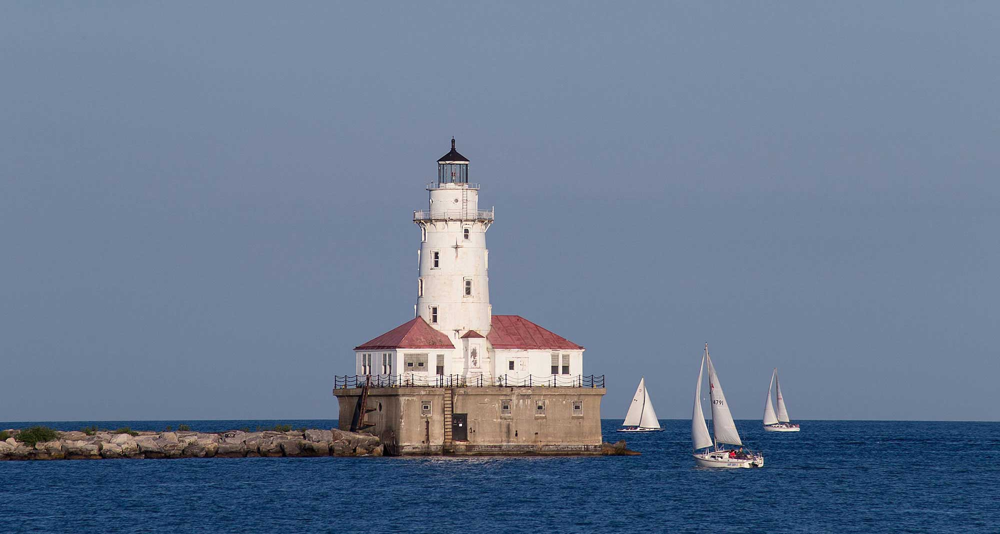

February 9th - Juvenile Bald Eagle1/2000, f/6, ISO2000
My trek in week 6 was spent along the frozen banks of the Fox River in Montgomery, IL. Bald Eagles have made a reappearance along the Fox in recent years, coming to town in January and February feeding along the exposed areas of the river. Although we were close, shooting with the Canon 100-400mm lens was tough. I could have easily used another 200mm to get in tighter. During the morning the adult eagles were few and far between although flew overhead a few times, it was mostly the juveniles out feeding.
Another chilly evening in Chicago, but this time I went down to Millenium Park. While there are ropes around Pritzker Pavilion I didn't feel too bad stepping over since there were already tracks through the snow and the security guard by the Bean seemed pretty engrossed in his smartphone. I jogged out to the center of the field and snapped a few shots trying to frame the bandshell, Aon Tower and the overhead beams as carefully as I could. I love the colors and how sharp this photo turned out. Worth getting a boot-full of snow.
While trying to determine my next lens purchase I decided to rent Canon's 17-40mm f/4 wide-angle zoom lens this week to test it out in the field. I went for an extremely cold walk along the Chicago River and around Michigan Ave getting a feel how it performs. It did great wide open at 17mm and was tack sharp at f/10 with no noticeable issues. I would love to try something in the neighborhood of 14mm, but this is a great general purpose wide-angle. This was my favorite from the walk this week - the river was frozen over and the lights were just starting to come on as the sun disappeared behind the camera. Its tough shooting so wide because of the vertical distortion from the buildings, but if you keep that in mind while shooting you can give yourself some room to fix in post.

 



 
